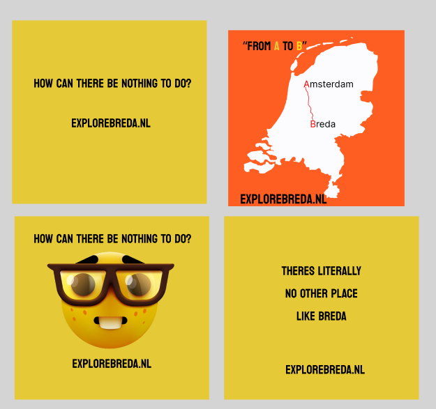

What I did
For this project, I was excited to create a video for the media campaign and design posters. Inspired by the film "Trainspotting" and its powerful "Choose life" intro, a group member and I developed a similar concept:
- "Choose Breda"
- "Choose strolling in the park with your significant other," showcasing the park
- "Choose..."
- "Choose..."
- "Choose..."
- "Choose Breda… Explorebreda.nl"
I saw great possibilities with this approach and was eager to bring it to life.
How I did it
I developed a concept that my group liked, so I began planning the filming locations to showcase Breda. I wrote a script but needed music. We couldn't use "Born Slippy" by Underworld due to copyright and recognizability.
Finding a suitable replacement was challenging. We filmed in Breda, but the gloomy weather ruined the footage. The next day, a group member and I decided to pivot from the “choose life” idea. We brainstormed and decided to emulate Wes Anderson’s style, known for his unique color palettes and symmetry, for our project.
Posters journey!
For the final version, one of the feedback points we received was that the words could use colors to express them better. However, this wasn’t our first poster idea for the project...

My first posters design
How it helped
This project taught me the importance of brainstorming and researching multiple ideas instead of settling on the first one. Creating a storyboard was also crucial, as it gave us a clear filming plan.
Teachers often advised me to "narrow down your idea," suggesting I avoid broad concepts and focus on something specific.